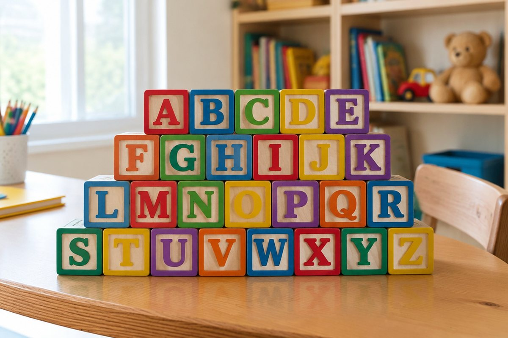

전체 단원 › 3학년 1학기 › 영어 › 알파벳과 낱말
알파벳 26글자로 어떻게 낱말을 만들까?

간판이나 과자 봉지에서 A, B, C 같은 글자를 본 적 있죠? 이 글자들이 모여서 영어 낱말이 돼요.
알파벳은 모두 26글자예요
영어 글자를 알파벳이라고 해요. A부터 Z까지 모두 26글자가 있어요.
알파벳 노래를 부르면 순서를 쉽게 외울 수 있어요. A, B, C, D, E, F, G~ 하고 따라 불러 봐요.
A B C D E F G … X Y Z (모두 26개)
대문자와 소문자가 있어요
알파벳은 큰 글자(대문자)와 작은 글자(소문자)가 짝을 이뤄요. A와 a, B와 b는 같은 글자예요.
문장의 첫 글자나 사람 이름의 첫 글자는 대문자로 써요. 나머지는 보통 소문자로 써요.
A-a, B-b, G-g, Q-q / 이름: Tom, Mina
글자마다 소리가 있어요
알파벳은 이름과 소리가 달라요. b의 이름은 '비'지만, 낱말 속에서는 '브' 소리를 내요.
첫소리를 알면 낱말을 읽기 쉬워요. apple은 a(애), ball은 b(브), cat은 c(크) 소리로 시작해요.
a-apple(사과), b-ball(공), c-cat(고양이), d-dog(개)
글자를 모으면 낱말이 돼요
c, a, t 세 글자를 차례로 붙이면 cat(고양이)이 돼요. 소리를 하나씩 이어 읽으면 '크-애-트, 캣!'이 돼요.
글자 하나만 바꿔도 다른 낱말이 돼요. cat의 c를 h로 바꾸면 hat(모자)이 돼요.
c+a+t = cat → h+a+t = hat
핵심 낱말
- 알파벳
- 영어를 쓰는 글자. A부터 Z까지 26개
- 대문자
- A, B, C처럼 크게 쓰는 글자
- 소문자
- a, b, c처럼 작게 쓰는 글자
- 낱말
- 뜻을 가진 말 한 덩어리. 예: cat, dog
꼭 알아야 할 표현
| apple | 사과 | a로 시작해요 |
| ball | 공 | b로 시작해요 |
| cat | 고양이 | c로 시작해요 |
| dog | 개 | d로 시작해요 |
| egg | 달걀 | e로 시작해요 |
| What's this? | 이것은 뭐예요? | 물건 이름을 물을 때 |
| It's a cat. | 그것은 고양이예요. | 물건 이름을 알려 줄 때 |
한 줄 정리
- 영어 알파벳은 A부터 Z까지 26글자이고 대문자와 소문자가 있어요.
- 알파벳은 이름과 낱말 속 소리가 달라요(b는 '브' 소리).
- 글자의 소리를 차례로 이어 읽으면 낱말이 되고, 한 글자만 바꿔도 다른 낱말이 돼요.
학교 교육과정 연결
- [4영01-01] 알파벳과 쉽고 간단한 단어의 소리를 듣고 식별한다.
- [4영01-02] 알파벳 대소문자를 식별하여 읽는다.
- [4영01-04] 소리와 철자의 관계를 이해하며 쉽고 간단한 단어, 어구, 문장을 소리 내어 읽는다.